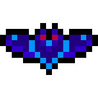
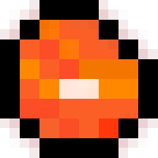
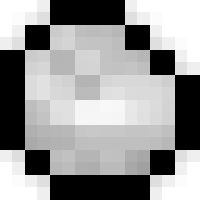

Bat Artefact
Extrem seltener Reliktdrop mit offensivem Build-Potenzial.
- ArtRelikt
- SeltenheitMythisch
- Drop-Chance0.5%
- Wurf-Schaden2.0
- Damage-Bonus0.5
- Crit-Chance0.1
- Crit-Damage0.1
Das Item-Wiki trennt seltene Relikte, Materialdrops und ihre Boni in einer lesbaren Übersicht mit Bildern und Drop-Chancen.

Extrem seltener Reliktdrop mit offensivem Build-Potenzial.

Früher Bat-Drop, ideal für Wurf- und Materialspiel.

Häufige Grundressource für den frühen Loot-Loop.

Seltener Fund für wertigere Runs.

Seltene Boss-nahe Ressource mit Lebensbonus.

Stabilerer Drop mit spürbar mehr Wurf-Schaden.
Bekannter Inventar-Gegenstand.
Rohmaterial ohne markanten Kampfbonus.